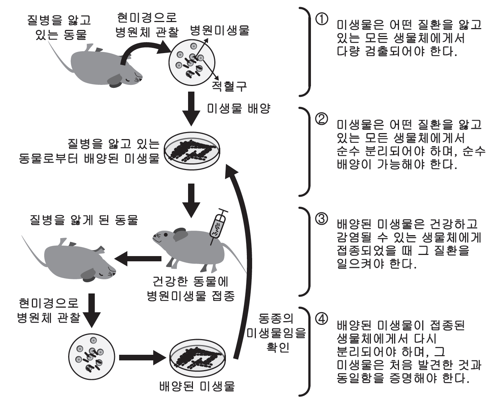

문제 2
코흐는 질병의 원인이 특정한 세균이라는 사실을 밝혀낸 의사이자 세균학자였다. 그는 소와 양의 폐에 염증을 일으켜 죽게 하는 탄저병에 관심이 많아 아래와 같은 방법으로 탄저병의 원인 미생물을 규명하였다. 실험을 통해 정립된 코흐의 공리는 다양한 질병의 원인을 규명하는 데 이용되어 왔으나 현재는 논리적인 지침 정도로 이용되고 있다.
< 코흐의 공리 >

1. 미생물은 어떤 질환을 앓고 있는 모든 생물체에서 다량 검출되어야 한다.
2. 미생물은 어떤 질환을 앓고 있는 모든 생물체에서 순수 분리되어야 하며, 순수 배양이 가능해야 한다.
3. 배양된 미생물은 건강하고 감염될 수 있는 생물체에게 접종되었을 때 그 질환을 일으켜야 한다.
4. 배양된 미생물이 접종된 생물체에서 다시 분리되어야 하며, 그 미생물은 처음 발견한 것과 동일함을 증명해야 한다.
코흐의 공리로 모든 질병의 원인을 밝히지 못하는 이유를 위의 실험 단계를 참조하여 설명하시오.